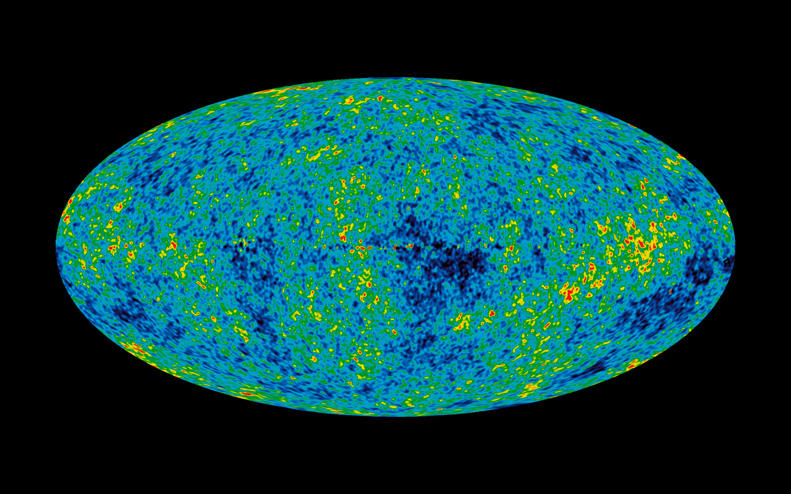

Light allows us to see billions of light-years into the universe, and different wavelengths highlight different things. Infrared light, for example, can reveal nebulas with dark gas that don't give off enough visible light to be seen easily. Read on to understand how different light sources offer insight into the stars and worlds far beyond our galaxy.
Radio energy is often seen in supermassive, incredibly active black holes, such as Hercules A shown here. Contrary to popular belief, black holes are not like vacuums that suck up all matter around them. They do indeed ingest some matter, however most of the time they redirect matter away. Black holes also spin around hot gas, which creates a blast of energy into other parts of the universe. Imagine a sling, and as the mass spins around faster and faster, it gains more energy. Then, the moment it's fast enough to escape the black hole, the mass zooms out in lots of directions. This blast can be viewed for tens of thousands of light-years. It destroys many objects in its path because of its immense heat and speed. And it glows in the radio light. These black holes are essential to the lifespan of supermassive black holes and the formation of galaxies. Using radio waves to spot them helps scientists understand how active and powerful a black hole is.
 Microwaves are essential for learning about the origin of our universe because they have the most significant piece of evidence that supports the Big Bang Theory. This evidence is called Cosmic Microwave Background Radiation, or CMBR for short. Scientists Arno Allan Penzias and Robert Woodrow Wilson discovered CMBR by trying to make radio so good that it would have no static. Even though radios mostly work in radio waves, they sometimes also use microwave frequencies. Wherever these two scientists turned their device, they found static-- loads of it, and in a particular microwave range. After trying many strategies to eliminate the static, Penzias and Wilson realized they couldn't get rid of it because they had made a device that was excellent at picking up microwaves and that this static was part of the universe. The scientists were detecting massive amounts of microwaves from space--more than would be accounted for from known phenomena. These waves were between everything, not just from the consolidations of matter in galaxies and stars. Scientists realized that this was a cosmic glow left over from a giant explosion. It was the first observational confirmation of the Big Bang Theory.
 Humans experience infrared light as heat, but it has more specific purposes for investigating the universe. Infrared is good for finding exoplanets, which are planets thrown out of their stars' orbit that now exist in the universe by themselves. Because they are not near a star, exoplanets have little visible light reflecting off of them. Nonetheless, they most likely glow in infrared light because these long wavelengths can travel long distances from stars.
Humans experience infrared light as heat, but it has more specific purposes for investigating the universe. Infrared is good for finding exoplanets, which are planets thrown out of their stars' orbit that now exist in the universe by themselves. Because they are not near a star, exoplanets have little visible light reflecting off of them. Nonetheless, they most likely glow in infrared light because these long wavelengths can travel long distances from stars.
Infrared light also helps us understand the formation of planets, which are immensely hot as their matter coalesces together into a sphere. For instance, when Earth was forming, it was almost entirely molten. When solar systems form, matter swirls toward the star from all directions, glowing in infrared light. This image shows the swirl of matter in a forming solar system around Aurigae A (center right). It also shows a twist in that swirling gas where a new planet is forming in the circle (right). A planet will show up as a disruption in this flow of material (and light) because of its gravity. Because of this, scientists look at the swirl of hot matter to look for disruptions made by forming planets.
 Although other electromagnetic spectrum frequencies can tell us more information, we should never downplay what visible light can show us. Before we learned what the other kinds of light were, we made many observations of visible light alone. Thus, it can give us many of the answers we take for granted. When we look at a galaxy in visible light, we can see what shape the galaxy is: spiral, elliptic, or irregular. And if we know how far away the galaxy is, then we can also tell its size.
Although other electromagnetic spectrum frequencies can tell us more information, we should never downplay what visible light can show us. Before we learned what the other kinds of light were, we made many observations of visible light alone. Thus, it can give us many of the answers we take for granted. When we look at a galaxy in visible light, we can see what shape the galaxy is: spiral, elliptic, or irregular. And if we know how far away the galaxy is, then we can also tell its size.
Delve deeper, and visible light can tell us more about what gasses are present based on their colors. For example, when heated, hydrogen glows pink. Knowing that hydrogen is essential to star formation, scientists can point out pink, hydrogen-rich spots as nebulas. Visible light can also tell us if these galaxies have a companion or are part of a cluster.
 Ultraviolet light is critical to the study of young stars, which is essential to study how galaxies form, maintain their shape and continue to exist. Unlike X-rays and gamma rays, ultraviolet light does not need powerful objects to produce it. While ultraviolet is undoubtedly present in extreme scenarios, it can also be made by stars and items with less energy. Ultraviolet light is more likely to show up in younger stars because hydrogen atoms often release it, and younger stars have not burned as much of their hydrogen as older stars. Because of this, the more UV light a star emits, the younger it is. This can help us see where stars are forming, as shown in this image, giving us more data about how galaxies form.
Ultraviolet light is critical to the study of young stars, which is essential to study how galaxies form, maintain their shape and continue to exist. Unlike X-rays and gamma rays, ultraviolet light does not need powerful objects to produce it. While ultraviolet is undoubtedly present in extreme scenarios, it can also be made by stars and items with less energy. Ultraviolet light is more likely to show up in younger stars because hydrogen atoms often release it, and younger stars have not burned as much of their hydrogen as older stars. Because of this, the more UV light a star emits, the younger it is. This can help us see where stars are forming, as shown in this image, giving us more data about how galaxies form.
 X-rays can tell us a lot about galaxies and supernovas because, like gamma rays, they are produced by powerful objects that are millions of degrees Celsius. In a galaxy, X-rays are likely to come from the black hole, which is why they tell us more about the center of a galaxy than its overall size and shape. X-rays also help us see how many galaxies are in a cluster, including those too dim to see through visible light.
X-rays can tell us a lot about galaxies and supernovas because, like gamma rays, they are produced by powerful objects that are millions of degrees Celsius. In a galaxy, X-rays are likely to come from the black hole, which is why they tell us more about the center of a galaxy than its overall size and shape. X-rays also help us see how many galaxies are in a cluster, including those too dim to see through visible light.
Supernovas, like the one shown in this photo, are giant explosions that happen in supermassive stars and release lots of X-rays. The tension within each star is how much gravity tries to condense it versus how much energy it creates to hold its size. Inside stars, nuclear fusion occurs. When the star finally fuses to iron, it uses more energy than it produces. Because the star is now losing energy, gravity wins the match, and the star implodes. Scientists use X-rays to monitor these implosions. The remnants of these stars eventually become the groundwork for new young stars and solar systems, which scientists monitor to learn more about the formation of our solar system.
 Gamma rays, which are rare compared to other light forms, are essential to studying mighty explosions and objects. Because they are so energetic, gamma rays must be produced by something very hot or very active. They are often seen in the center of large galaxies, where scientists suspect supermassive black holes exist, as shown in this image. The gasses near black holes move fast and generate a lot of friction, heat, and energy, including gamma rays. When gamma rays from space hit another object and bounce away, they have a unique signature of the chemical elements that they hit. When MESSENGER, a spacecraft, started orbiting Mercury, it had a gamma-ray detector to study elements on the planet's surface without ever collecting a sample from the planet itself.
Gamma rays, which are rare compared to other light forms, are essential to studying mighty explosions and objects. Because they are so energetic, gamma rays must be produced by something very hot or very active. They are often seen in the center of large galaxies, where scientists suspect supermassive black holes exist, as shown in this image. The gasses near black holes move fast and generate a lot of friction, heat, and energy, including gamma rays. When gamma rays from space hit another object and bounce away, they have a unique signature of the chemical elements that they hit. When MESSENGER, a spacecraft, started orbiting Mercury, it had a gamma-ray detector to study elements on the planet's surface without ever collecting a sample from the planet itself.
The photo of a forming solar system was taken by the European Southern Observatory. All of the other photos on this page were taken by NASA.